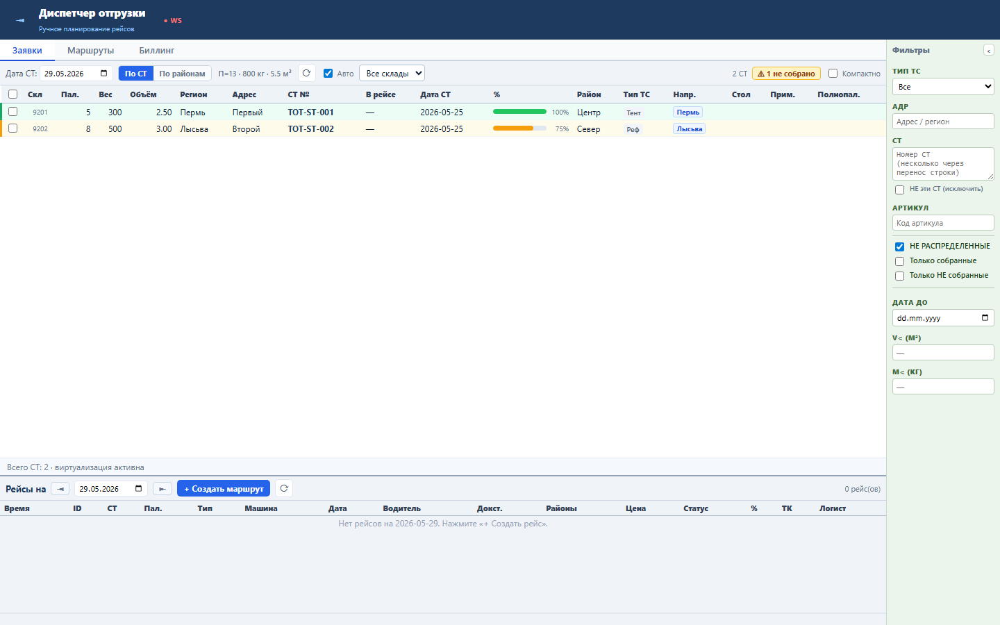
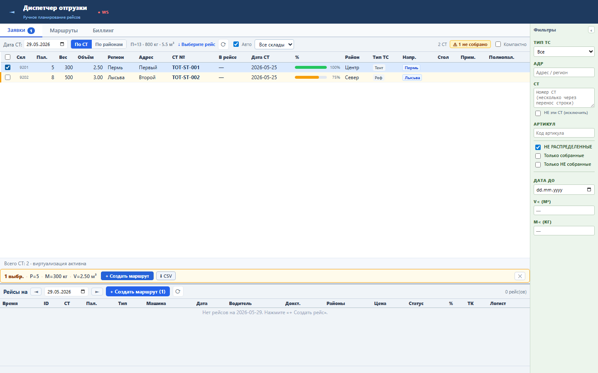
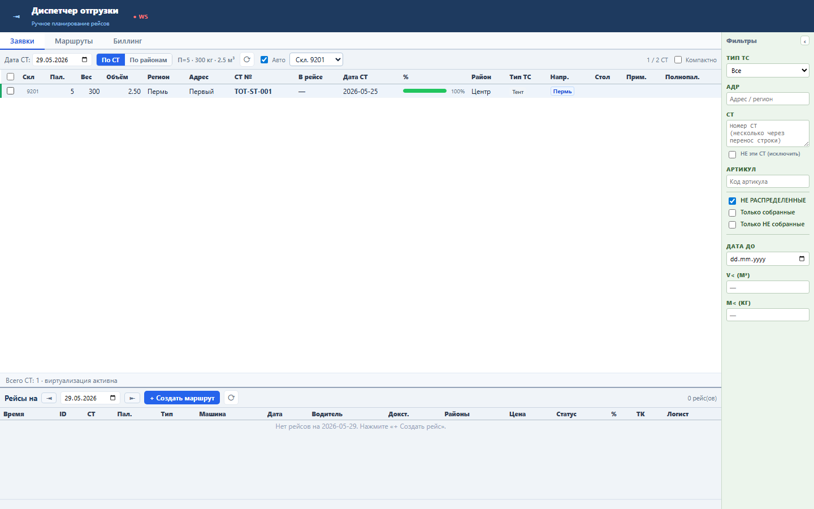

Блок показывает общий объём работы в текущем списке СТ, независимо от того, что выделено для операции.
Итог П/M/V считается на клиенте по wareFilteredSts: паллеты, вес и объем всех видимых строк. Панель выделения Sprint 51 продолжает считать только выбранные СТ.
Sprint 55 закрыт functional, load и UI smoke проверками.


